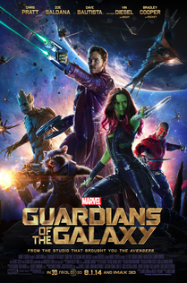
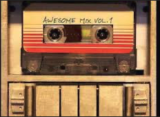

Guardians Poster
Click on poster to go to wikipedia
Guardians of Galaxy Soundtrack Guide
Click Me Song lyrics for Hooked on a feelingMr Choka himself
“Hooked on a Feeling” by Blue Swede (1968) plays when the Guardians first enter The Kyln, the high-security prison run by the Nova Corps. Peter tries to interfere when he sees a prison guard using his beloved Walkman, claiming that “Hooked on a Feeling” belongs to him. The guard tasers for stepping out of line, and the song continues to play as the Guardians suit up in their prison uniforms. The song also plays in the Guardians of the Galaxy trailers.
Quill contacts Yondu before following Gamora into space, giving her his helmet to survive; Yondu arrives and retrieves the pair. Rocket, Drax, and Groot threaten to attack Yondu's ship to rescue them, but Quill negotiates a truce, promising the Orb to Yondu. Quill's group agrees that facing Ronan means certain death but that they cannot let him use the Infinity Stone to destroy the galaxy. On Ronan's flagship, the Dark Aster, Ronan embeds the Stone in his warhammer, taking its power for himself. He contacts Thanos, threatening to kill him after first destroying Xandar. Hateful of her adoptive father, Nebula allies with Ronan.
The Ravagers and Quill's group join the Nova Corps to confront the Dark Aster at Xandar, with Quill's group breaching the warship with the Milano. Ronan uses his empowered warhammer to destroy the Nova Corps fleet. Drax kills Korath, and Gamora defeats Nebula, who escapes. However, the group finds themselves outmatched by Ronan's power. Rocket crashes a Ravager ship through the Dark Aster. The damaged Dark Aster crash-lands on Xandar, with Groot sacrificing himself to shield the group. Ronan emerges from the wreck and prepares to destroy Xandar, but Quill distracts him, allowing Drax and Rocket to destroy Ronan's warhammer. Quill grabs the freed Stone, and with Gamora, Drax, and Rocket sharing its burden, uses it to vaporize Ronan.this is normal
this is boldtext
this is italictext
this is underlinedtext
this is
this is bigtext
this is smalltext
this is subscripttext
this is superscripttext
this is monospacedtext
this is normaltext
UnOrdered List
- Mix Tape
- Space Ship
- Racoon
- Groot
Ordered List
- First Get Friends
- Second Get Food For Friends
- Third Get Space Ship
- Fourth Have A Party
Description List

Career Blue Swede was first formed in 1973, when Björn Skifs, a top vocalist in Sweden, was looking for a band to accompany him during his concerts.[3] The band was originally called "Blåblus" (Swedish for "blue blouse" [could be made out of denim], a pun on the word "blues"[4]) and featured Skifs singing the lead vocals. The band got their international breakthrough in 1974 with their cover of the 1968 B. J. Thomas song "Hooked on a Feeling".[5] Blue Swede recorded Thomas's song in 1973, but based its rendition of the song on a 1971 version released by British pop eccentric Jonathan King, which created the "ooga-chaka" introduction.[clarification needed] Producer at the recording sessions was Bengt Palmers. Blue Swede released "Hooked on a Feeling" in Sweden in May 1973 and in the United States in February 1974. The song reached number one in the U.S. for one week in April 1974 and stayed in the Billboard Hot 100 chart for 18 weeks. The track also topped charts in Australia, Canada, and the Netherlands, where it reached a peak chart position of 26.[3] To capitalize on the success of the song, Blue Swede released the album Hooked on a Feeling that same year.  Throughout the rest of 1974, two follow-up singles from the same LP were released: "Silly Milly", which peaked at position 71 in the U.S., and a cover of The Association's "Never My Love", which made the Top Ten by peaking at position 7.[5] From the band's 1974 follow-up album, Out of the Blue, they recorded a medley of "Hush" by Deep Purple and "I'm Alive" by Tommy James and the Shondells (not The Hollies' song of the same name), peaking at position 61 in the U.S., and achieving its greatest chart success in Scandinavia. Skifs left the band in 1975 and the band continued as Blåblus, releasing a further two albums.
Blue Swede (Swedish: Blåblus) were a Swedish rock band fronted by Björn Skifs which was active between the years 1973–1979. Blue Swede released two albums of cover versions, including a rendition of "Hooked on a Feeling", which brought them international chart success.[1] The band consisted of Anders Berglund (piano), Björn Skifs (lead vocals), Bosse Liljedahl (bass), Hinke Ekestubbe (saxophone), Jan Guldbäck (drums), Michael Areklew (guitar), and Tommy Berglund (trumpet).[2] They disbanded after Skifs decided to embark on his solo career.
- Groot
- Groot is a character appearing in American comic books published by Marvel Comics. Created by Stan Lee, Larry Lieber and Jack Kirby, the character first appeared in Tales to Astonish #13
- Rocket
- Rocket Raccoon is a character appearing in American comic books published by Marvel Comics. Created by writer Bill Mantlo and artist Keith Giffen, the character first appeared in Marvel Preview #7. He is an intelligent, anthropomorphic raccoon, who is an expert marksman, weapon specialist and master tactician
- Gamora
- Gamora is a character appearing in American comic books published by Marvel Comics. Created by writer/artist Jim Starlin, the character first appeared in Strange Tales #180. Gamora is the adopted daughter of Thanos, and the last of her species
Rocket Schedule
| Sunday | Monday | Tuesday | Wednesday | Thursday | Friday | Saturday |
|---|---|---|---|---|---|---|
| No Launch | Mars | Jupiter | Earth | Pluto | Saturn | No Launch |